Mission Kidsono · Conception onboarding · L'écran d'autorité (le mur des éditeurs)
Emprunter la notoriété qu'on n'a pas : l'écran qui pose la caution éditeurs, tôt et en clair
Kidsono est inconnue du grand public. Sa seule notoriété est empruntée : 16 maisons d'édition que le parent reconnaît déjà (Gallimard Jeunesse, École des Loisirs, Nathan, Sarbacane, Milan, Bayard...), une presse qui a parlé du studio (ELLE, France Inter, Télérama, Le Monde) et des contenus recommandés par l'Éducation nationale. La caution se joue au niveau éditeur, jamais au niveau du titre ni de l'app. Cet audit balaye le corpus (37 apps) pour répondre à une seule question : comment poser cette autorité dans l'onboarding, juste après le carrousel de valeur, pour qu'elle convainque un parent exigeant en 2 secondes. La règle dure qui cadre tout : nommer la caution (jamais « recommandé par des experts » en l'air), la montrer tôt et en clair (l'erreur d'Epic est de la cacher derrière le mur), et ne jamais s'appuyer sur une preuve de masse qu'on n'a pas (« 2,5 M de parents » est un contre-modèle, pas un objectif).
Corpus · 37 apps, 16 captures lues en pleine résolution
Confiance · Solide vu sur captures · Observé pattern panel · Estim. directionnel
Refs positives · Lingokids, Pickatale (logos éditeurs) · Reading.com (research-backed) · Reading Eggs (lauriers)
La réponse aux questions
La synthèse d'abord ; les écrans qui la fondent suivent, groupés par type d'autorité. Honnêteté : je liste aussi ce que le benchmark fait et qu'on ne reprend pas, et les types d'autorité qui ne s'appliquent pas à Kidsono.
1 · Combien d'écrans d'autorité, et où ?
Un écran dédié, tôt, juste après le carrousel. La caution est ensuite distribuée, pas répétée.
Observé Le corpus ne tient presque jamais l'autorité sur un écran 100% dédié : elle se pose le plus souvent en pied de splash (Lingokids : logos Oxford + KidScreen), en intercalaire d'onboarding (Reading.com : un écran « research-backed », un écran témoignage, glissés entre deux questions de quiz) ou au paywall (Reading Eggs : mur de lauriers). C'est une couche distribuée, rarement un temps fort isolé.
Observé Pour Kidsono, c'est précisément l'opportunité. Personne ne consacre un écran plein à un vrai mur de logos éditeurs reconnaissables, parce que la plupart n'ont qu'une seule caution (Oxford pour Lingokids) ou n'en ont aucune et meublent au vague. Nous, on en a 16. On en fait donc un écran d'autorité dédié, placé tôt (juste après les 3 slides du carrousel, là où le parent vient d'entendre la promesse « le plus beau catalogue »), avec la presse « vu dans » en bande de support. La caution la plus forte (Éducation nationale) est gardée pour le paywall, au moment de décider, pour ne pas tout brûler d'un coup. Un escalier, pas un empilement.
2 · Quels types d'autorité montrer, et lesquels éviter pour nous ?
Logos éditeurs (notre force) + presse « vu dans » (support). On évite la masse, le vague et l'auto-décerné.
- Logos de maisons / marques caution Solide Le levier central pour nous : 16 maisons reconnaissables. Lingokids (Oxford) et Pickatale (Oxford, Cricket, Arcturus) le font, mais avec une ou deux marques. Notre mur sera plus dense et plus reconnaissable côté parent FR.
- Presse « vu dans » Estim. Quasi absente du corpus (apps US, peu de presse grand public). Pour nous c'est un actif rare : ELLE, France Inter, Télérama, Le Monde. En bande de support sous le mur éditeurs, jamais en revendication sur l'app.
- Recherche / méthode (« research-backed ») Solide Fort chez Reading.com (« Direct Instruction method », lauriers). Ne s'applique pas tel quel : on n'est pas une app de pédagogie. Notre équivalent = l'exigence éditoriale du studio, pas une méthode scientifique.
- Caution institutionnelle (Éducation nationale) Solide Notre sceau le plus fort. Mais au paywall, pas sur cet écran (un type d'autorité par écran). Porte sur les contenus, jamais sur l'app.
- Lauriers / récompenses Solide Très présent (Reading Eggs, Lingokids KidScreen). Kidsono en a peu pour l'instant : à n'utiliser que si réel et nommé. Pas un pilier.
- Preuve de masse (« X M de parents », « 16 000 écoles », « 4,7 / 59k enfants ») Solide Omniprésent (Reading.com, Reading Eggs). Interdit pour nous : notoriété zéro, on ne l'a pas. Le revendiquer sonnerait faux ou mensonger.
- Témoignage parent Solide Très utilisé (Reading.com, Bayam, Super Simple Songs). À éviter tant qu'on n'a pas de vrais avis ; inventer ou recycler décrédibilise. Réservé plus tard, au paywall, quand on en aura.
3 · Comment les présenter (format) ?
Un mur de logos en clair, posés à plat, sobre et premium. Pas de superlatif vide, pas d'illustration de scène.
Observé Les formats qui marchent dans le corpus : les logos en pied d'écran sur fond uni (Lingokids), la grille de logos / collections d'éditeurs (Pickatale « Publisher Collections »), le mur de lauriers en grille (Reading Eggs). Le bon réflexe est toujours le même : le logo parle seul, on ne le sur-commente pas. Le format à fuir est l'illustration de scène sans nom (Epic « Trusted by teachers and parents » avec des couvertures floues et zéro logo identifiable).
Observé Format Kidsono : un titre sobre (registre parent, vouvoiement, exigeant : « Les maisons que vous connaissez déjà »), un mur des 16 logos éditeurs posés à plat (illustrations figées, pas de scène ni photo, conformément à la contrainte d'illustration), une bande presse « vu dans » en dessous (logos médias en niveaux de gris, discrète), un CTA neutre (« Continuer »). Une caution par écran : ici les éditeurs, point. Pas de chiffre de masse, pas d'étoiles, pas de témoignage.
4 · Quel est notre angle vs le benchmark ?
Le marché cache ou dilue la caution ; nous la montrons en clair, tôt, et au niveau le plus reconnaissable (l'éditeur).
Observé Deux failles récurrentes dans le corpus. 1/ La masse à la place du nom : la plupart rassurent par le volume (« 2,5 M de parents », « 20 millions d'enfants ») parce qu'ils n'ont pas de caution nommée à montrer. 2/ Le vague ou le caché : Epic affiche « Trusted by teachers and parents » sans nommer personne, et garde tout le contenu de marque derrière le compte. Dans les deux cas, le parent doit croire sur parole.
Observé Notre angle : la caution nommée et reconnaissable, sans détour. Le parent FR connaît déjà Gallimard Jeunesse et l'École des Loisirs : on n'a pas à le convaincre que c'est sérieux, juste à le lui montrer. C'est un actif que presque aucun concurrent du segment ne possède (les apps de pédagogie US empruntent à une université ; nous empruntons à 16 maisons que le parent a déjà dans sa bibliothèque). Impact business Estim. : lever le risque perçu d'une marque inconnue est le frein n°1 à l'activation d'un parent exigeant. Un écran de caution nommée, tôt, peut soutenir le passage carrousel → offre sans budget d'acquisition (c'est de la conversion organique, pas du CAC payé).
Cartographie trust-building : ce que le corpus déploie, ce qui vaut pour nous
Les sept types d'autorité repérés dans le corpus, avec leur présence, leur applicabilité à Kidsono, et le pourquoi. C'est la grille qui fonde les recos ci-dessus.
| Type d'autorité | Présence dans le corpus | Pour Kidsono | Pourquoi |
|---|
| Logos éditeurs / marques caution | Lingokids (Oxford), Pickatale (Oxford, Cricket, Arcturus, Universal ELT) | Pilier | Notre seul actif de notoriété, et le plus reconnaissable côté parent FR. Personne n'a un mur aussi dense. |
| Presse « vu dans » | Quasi absente (corpus surtout US) | Support | Actif rare qu'on possède (ELLE, France Inter, Télérama). En bande, sous le mur. Sur le studio, pas sur l'app. |
| Caution institutionnelle | Skybrary (« for Schools »), implicite | Plus tard | Éducation nationale = notre sceau le plus fort, gardé pour le paywall (tampon final). Un type par écran. |
| Recherche / méthode (« research-backed ») | Reading.com, Hooked on Phonics, Reading Eggs | Non | On n'est pas une app de pédagogie scientifique. Notre équivalent = l'exigence éditoriale, pas une méthode. |
| Lauriers / récompenses | Reading Eggs (mur), Lingokids (KidScreen) | Si réel | Peu de prix à ce jour. À n'utiliser que nommé et vrai. Jamais un pilier, jamais d'auto-décerné. |
| Recommandation enseignants / experts | Reading.com (« trusted by teachers »), Epic (vague) | Non | On n'a pas de réseau enseignant à citer. Et nommer est obligatoire : « des experts » en l'air est interdit. |
| Témoignage parent | Reading.com, Bayam, Super Simple Songs | Pas encore | Pas de vrais avis pour l'instant. Inventer ou recycler décrédibilise un public exigeant. Au paywall, plus tard. |
| Preuve sociale de masse | Reading.com (« 2,5 M »), Reading Eggs (« 20 M ») | Jamais | Notoriété zéro : on ne l'a pas. La revendiquer sonne faux. Contre-modèle assumé. |
Les écrans, groupés par type d'autorité
Lecture pleine résolution, capture par capture. Chaque carte : ce que je repère, et l'intérêt ou le risque pour Kidsono.
Type 1 · à reprendre (notre pilier)
Les logos d'éditeurs / de marques caution, posés en clair
La caution nommée et reconnaissable. C'est exactement notre levier, et le corpus le fait peu (une ou deux marques au mieux). Nous en avons 16 : c'est là que se joue notre écran d'autorité.
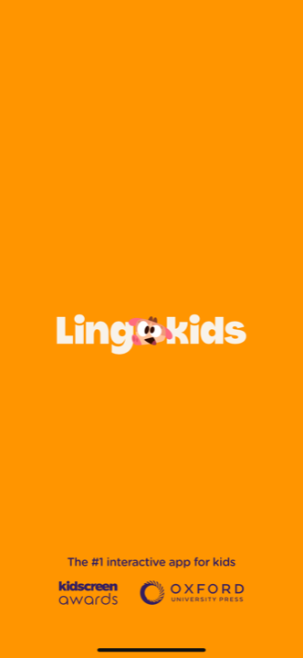
Lingokids
Splash · logos en pied
« The #1 interactive app for kids », puis en pied : logos KidScreen Awards + Oxford University Press.
Le format de référence : logos de caution posés en pied, sur fond uni, le logo parle seul. On reprend la sobriété, mais sur un écran dédié et avec un mur dense, pas deux logos discrets.
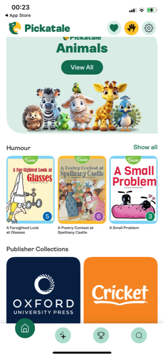
Pickatale
Home · « Publisher Collections »
Section « Publisher Collections » avec les pavés-logos Oxford University Press et Cricket.
La grille de logos éditeurs, exactement notre logique. Ici en home, pas en onboarding : on en fait un écran d'autorité dédié et plus tôt. Le format pavé-logo est le bon.
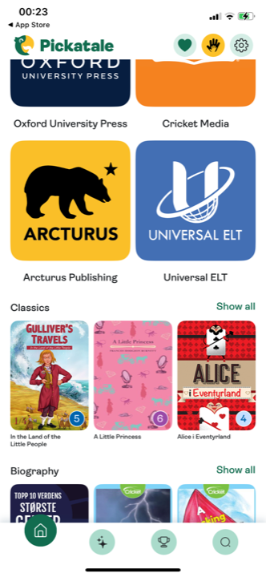
Pickatale
Catalogue · mur d'éditeurs
Grille de pavés-logos : Oxford University Press, Cricket Media, Arcturus Publishing, Universal ELT.
Le vrai mur de maisons, le plus proche de notre besoin. Quatre logos ici ; nous en aurons davantage et plus reconnaissables côté parent FR. Le modèle de composition à viser.
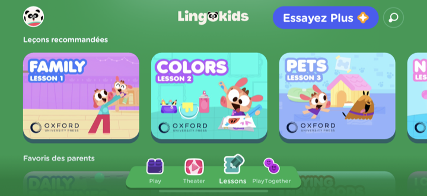
Lingokids
Catalogue · caution sur les contenus
Leçons recommandées, chaque carte tamponnée du logo « Oxford University Press » en pied.
La caution redescendue sur les contenus eux-mêmes (le tampon sur chaque carte). Idée annexe : on pourra plus tard tamponner les fiches du logo éditeur. Pas pour cet écran-ci, mais cohérent avec l'escalier.
Type 2 · à reprendre (en support)
La presse « vu dans » et la caution méthode
La bande de support sous le mur éditeurs. La presse est notre actif rare (le corpus US ne l'a pas). La « caution méthode » de Reading.com montre comment poser une crédibilité sobre, dont on garde la forme (lauriers nommés) sans le fond (méthode scientifique).
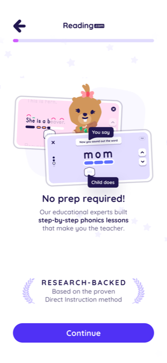
Reading.com
Onboarding · bloc « research-backed »
« No prep required! Our educational experts built step-by-step phonics lessons. » + bandeau « RESEARCH-BACKED · Based on the proven Direct Instruction method », encadré de lauriers.
On prend la forme : la caution nommée (« Direct Instruction method »), sobre, en bandeau à lauriers. On ne prend pas le fond : on n'a pas de méthode scientifique. Notre équivalent = l'exigence des maisons d'édition.
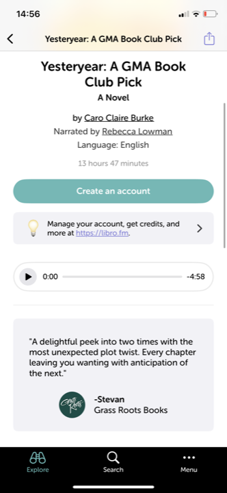
Libro.fm
Fiche · avis de libraire nommé
Citation de critique signée « Stevan, Grass Roots Books » (une vraie librairie nommée).
L'autorité par la source nommée (un libraire réel, pas « les libraires aiment »). Confirme notre règle : toujours nommer. Transposable à la presse « vu dans » : ELLE, France Inter, pas « la presse ».
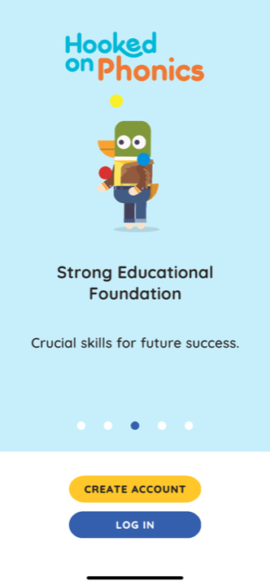
Hooked on Phonics
Carrousel · « Strong Educational Foundation »
« Strong Educational Foundation · Crucial skills for future success. » avec une mascotte, zéro source.
Le contre-exemple de la promesse sans preuve : une revendication de sérieux sans aucun nom derrière. À ne pas faire : c'est le piège du superlatif vide que notre voix (« exigence prouvée, pas clamée ») interdit.
Type 3 · à connaître (pas pour cet écran)
Lauriers, récompenses et certifications en grille
Le mur de badges. Format efficace quand on a les prix, mais Kidsono en a peu à ce jour. On le documente pour s'en inspirer plus tard si on accumule des récompenses, jamais en auto-décerné.
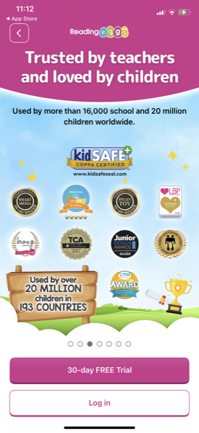
Reading Eggs
Carrousel · mur d'awards
« Trusted by teachers and loved by children », puis une grille de ~12 badges (kidSAFE, Smart Media, Brain Toy, TCA, LITH Award...).
Le format mur de lauriers bien exécuté (grille dense, badges réels). Mais mêlé à « 20 millions d'enfants » : la masse qu'on n'a pas. On garde l'idée de grille, on retire le chiffre.
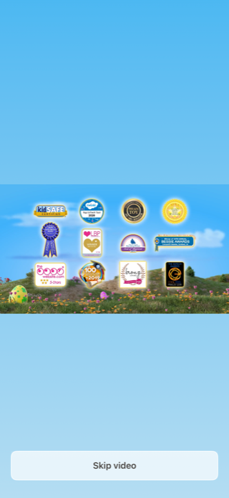
Reading Eggs
Vidéo intro · planche de badges
Même planche de badges/récompenses animée dans la vidéo d'intro.
La caution par accumulation de badges, en mouvement. Pour nous : sans objet tant qu'on n'a pas les prix. À garder en tête si le studio gagne des distinctions exploitables.
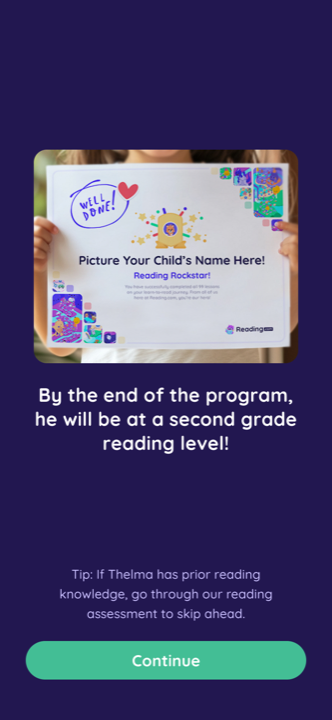
Reading.com
Plan · faux certificat enfant
Mockup d'un certificat « Reading Rockstar » au nom de l'enfant + « il atteindra un niveau de 2e année ».
Hors sujet pour nous : c'est de la projection de résultat pédagogique, pas de la caution. On ne promet pas une performance d'apprentissage : on est du plaisir d'écoute, pas de la note scolaire.
Type 4 · institutionnel (pour le paywall, pas ici)
La caution institutionnelle (écoles / Éducation nationale)
Notre sceau le plus fort, mais réservé au paywall (un type d'autorité par écran). Le corpus l'effleure via le double compte « familles / écoles ». À articuler, pas à mettre sur cet écran.
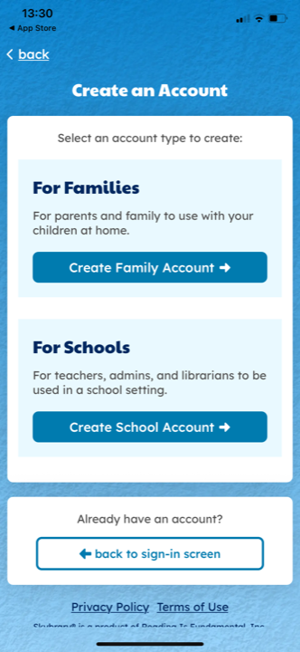
Skybrary
Création de compte · familles / écoles
Deux portes : « For Families » et « For Schools » (« used in a school setting »).
Le signal institutionnel implicite : « utilisé en classe » = sérieux. Notre version explicite et plus forte = « recommandé par l'Éducation nationale », au paywall, sur les contenus. Pas sur cet écran-ci.
Type 5 · à NE PAS reprendre
L'autorité vague, la preuve de masse, le témoignage qu'on n'a pas
Tout ce que le marché empile parce qu'il n'a pas de caution nommée à montrer. Massif et bien fait, mais sans objet ou contre-productif pour nous. Montré ici pour cadrer ce qu'on écarte sciemment, et pourquoi.
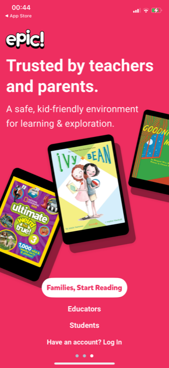
Epic
Slide · « Trusted by teachers and parents »
« Trusted by teachers and parents. » sur un fond de couvertures floues, aucun nom, aucun logo, le reste caché derrière le compte.
Le contre-exemple central. Autorité vague (qui, au juste ?) et cachée (le contenu de marque est derrière le mur). Nous faisons l'inverse : nommé et en clair, tôt.
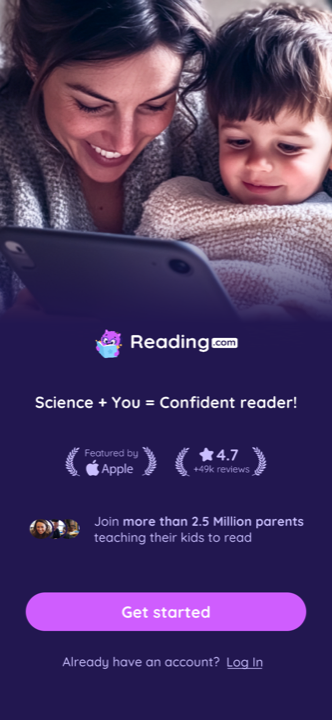
Reading.com
Hook · masse + étoiles
« Featured by Apple », « ★ 4.7 / 49k reviews », « Join more than 2.5 Million parents ».
La preuve de masse, interdite pour nous (notoriété zéro). « Featured by Apple » et les étoiles sont des cautions qu'on n'a pas. Le revendiquer sonnerait faux.
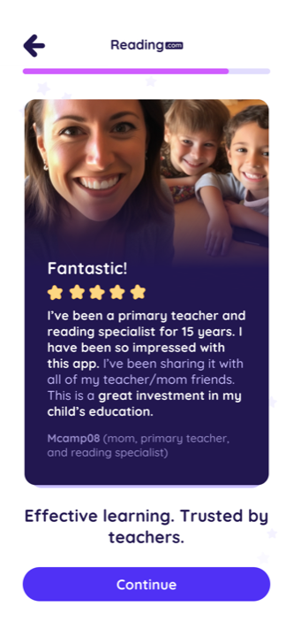
Reading.com
Onboarding · témoignage 5★
Photo + « Fantastic! ★★★★★ I've been a primary teacher for 15 years... », signé « Mcamp08 ». « Trusted by teachers. »
Le témoignage, pas encore pour nous : on n'a pas de vrais avis. Recycler ou inventer décrédibilise un public exigeant. Réservé au paywall, plus tard, quand on en aura de réels.
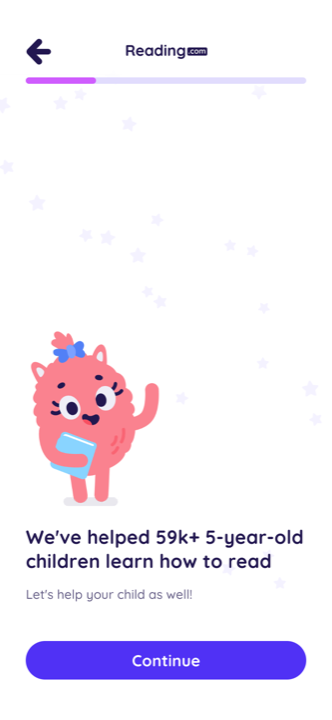
Reading.com
Onboarding · chiffre de masse
« We've helped 59k+ 5-year-old children learn how to read. Let's help your child as well! »
Même piège, version chiffrée. La caution par le volume d'utilisateurs : impossible et non souhaitable pour une marque qui se lance. On rassure par le nom des maisons, pas par un compteur.
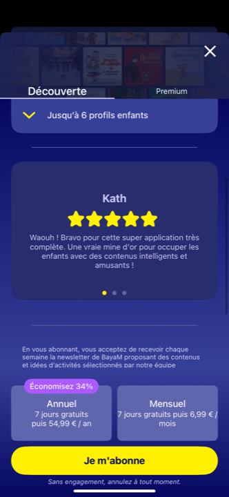
Bayam (FR)
Paywall · témoignage 5★ intégré
« Kath ★★★★★ Waouh! Bravo pour cette super application... » dans un carrousel d'avis, au-dessus du CTA.
Le réflexe FR du témoignage au paywall : à éviter tant qu'on n'a pas de vrais avis. Et Bayam est dans la famille des références à ne pas suivre (ton niais). Contre-exemple double.
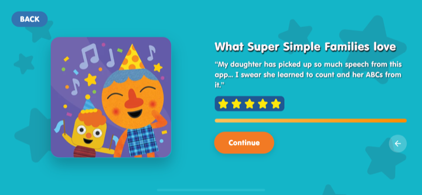
Super Simple Songs
Onboarding · « families love »
« What Super Simple Families love · "My daughter has picked up so much speech..." » + 5 étoiles.
Témoignage anonyme + étoiles : la preuve sociale qu'on n'a pas, dans un ton enfantin loin de notre registre parent premium. Sans objet pour cet écran.
Ce que ça donne pour Kidsono
La reco (à trancher avec Charles avant le brief Claude Design)
- Un écran d'autorité dédié, tôt : juste après les 3 slides du carrousel de valeur, avant l'offre. C'est le seul moment où le parent vient d'entendre « le plus beau catalogue » et où la preuve tombe pile.
- Contenu = le mur des 16 éditeurs en clair : Gallimard Jeunesse, École des Loisirs, Nathan, Flammarion Jeunesse, Sarbacane, Auzou, Rageot, Poulpe Fictions, Lucky Comics, Glénat, Delcourt, PKJ, Langue au Chat, Cascades, Lizzie, Grund. Logos posés à plat en grille (format pavé-logo façon Pickatale), illustrations figées, pas de scène ni de photo.
- Une bande presse « vu dans » en support, sous le mur : ELLE, France Inter, Télérama, Le Monde, en niveaux de gris, discrète. Cadrage strict : « vu dans », sur le studio / les contenus, jamais « l'app testée par ».
- Titre registre parent, vouvoiement, chic et exigeant, sobre : direction « Les maisons que vous connaissez déjà » ou « Les plus belles maisons, réunies pour ses oreilles ». Pas de superlatif vide, pas d'exclamation racoleuse.
- Une seule caution sur cet écran : les éditeurs. Pas de chiffre de masse, pas d'étoiles, pas de témoignage, pas de « recommandé par des experts ».
- Articulation avec le paywall : on y garde le tampon Éducation nationale (le sceau le plus fort, au moment de décider) + un écho condensé éditeurs/presse. L'escalier : carrousel (caution diffuse) → écran d'autorité (mur éditeurs nommés) → paywall (Éducation nationale, le sceau final). Jamais répéter le mur entier deux fois.
L'avis
Force : la reco s'appuie sur un actif réel et différenciant (16 maisons que le parent FR reconnaît déjà), là où le corpus rassure faute de mieux par la masse ou le vague. Le pattern « logos de caution posés en clair » est validé sur captures (Lingokids, Pickatale), et le contre-exemple Epic (caution cachée et anonyme) cadre précisément la faute à ne pas commettre. C'est un levier de conversion organique, sans coût d'acquisition.
Risques : 1/ l'accord des éditeurs sur l'usage de leur logo dans l'onboarding doit être vérifié (un mur de 16 logos est plus exposé qu'un tampon discret) ; à confirmer juridiquement avant de briefer le design. 2/ la densité visuelle : 16 logos hétérogènes peuvent virer au patchwork ; la discipline de composition (grille régulière, logos normalisés, beaucoup de calme) est la condition pour que « dense » reste « premium » et non « bazar ». 3/ la presse « vu dans » suppose des mentions réelles et récentes ; à sécuriser pour éviter une revendication contestable. 4/ Placer l'autorité avant l'offre suppose que le carrousel a déjà donné envie ; si le carrousel est faible, l'écran d'autorité arrive trop tôt et tombe à plat (dépendance à valider sur le flow complet).
Position vs standard : contrarian assumé sur le fond (le marché empile masse, étoiles et témoignages ; nous misons tout sur la caution nommée et n'affichons aucune preuve de volume), au standard sur la forme (logos de caution en clair, format éprouvé). L'angle « mur d'éditeurs reconnaissables, tôt et en clair » est en avance sur le segment audio enfant FR, qui rassure mal ou pas du tout au lancement.
Document de travail, mission conseil Kidsono. 16 captures lues en pleine résolution (Lingokids 03/18, Reading.com 04/05/07/10/18/24/29, Reading Eggs 03/12, Pickatale 17/18, Hooked on Phonics 04, Super Simple Songs 05, Skybrary 04, Libro.fm 07, Bayam 09, KiLi 04, Epic 04). Refs positives limitées aux apps pertinentes du corpus (Lingokids, Pickatale, Reading.com pour la forme) ; la famille des références à ne pas suivre (Bayam, etc.) n'apparaît qu'en contre-exemple. Prochaine étape : vérifier l'accord éditeurs sur l'usage des logos, puis brief Claude Design (un seul écran d'autorité, mur des 16 maisons + bande presse, illustrations figées, sans scène ni photo).